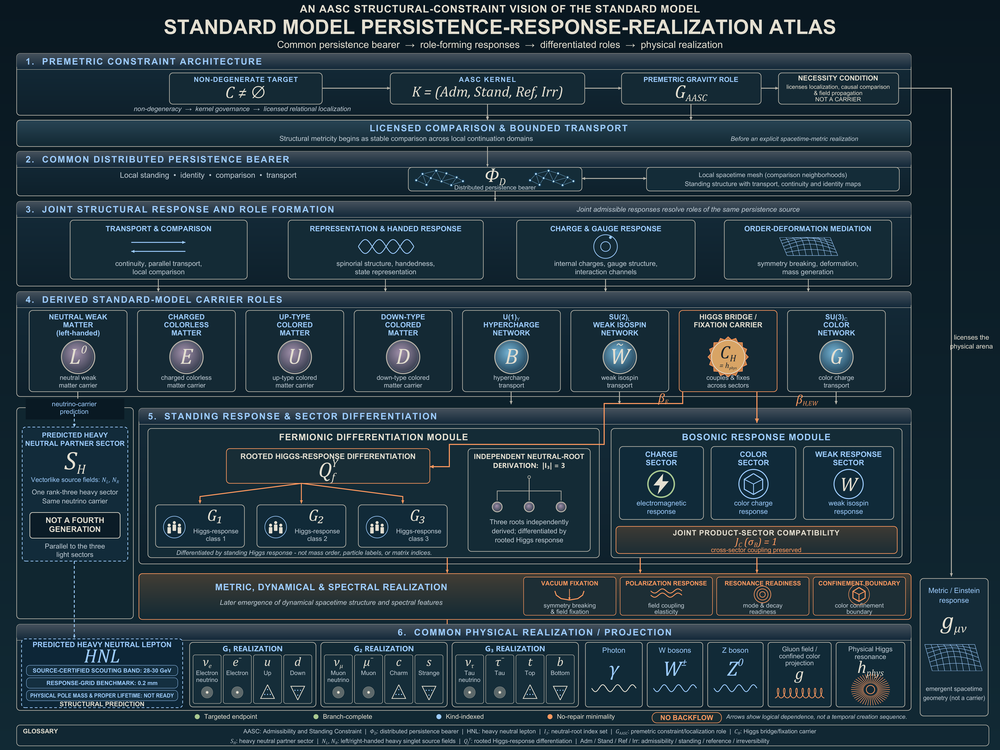

Transport & comparison
How local configurations are compared and carried through admitted continuation.
AASC / A guided research tour
From common persistence to the structure of matter.
What bears the physical content whose responses we call matter, charge, and fields? This arc reconstructs the Standard Model from a common distributed persistence bearer, through differentiated response roles, to a shared physical realization with gravity.
Transport compares local configurations while preserving their identity, boundary, and continuation data.
01 / The physical starting point
A particle description already presupposes that something can remain identifiable through change. Local comparisons, boundary relations, and transport must preserve enough of that identity for the description to refer to the same physical content.
The arc calls the organization carrying this content the distributed persistence bearer. It has local configurations and real response distinctions before it receives Standard Model species names.
In AASC, non-degenerate determinate construction is necessarily governed by admissibility, standing, reference, and irreversibility. Structural comparison and bounded transport follow in that order; a numerical spacetime metric belongs to a later realization.
CSP-R / sections 1-2Logical dependence, not a sequence in time.
CSP-R defines an operational source retaining local carrier profiles, configuration states, restrictions, boundary comparisons, transport, restoration, and response relations on their original domains. Its displayed profile is
CarProfD(U) = (BU, SU, IU, RU, PU, QU, ∂U, TU).
The operational source includes the actual witnessed operations, not only a snapshot of these values. Structural comparison is already present before a numerical distance function or Lorentzian metric. CSP-R proposition 1.2 and definition 2.1 establish this distinction.
02 / Differentiation
The next question is what that common physical organization can do. Transport, representation, charge, and Higgs mediation are distinguished by their actual responses. The reconstruction preserves those distinctions and the shared inputs that connect them.
How local configurations are compared and carried through admitted continuation.
How the same persistence responds to transformations, including handed distinctions.
Which boundary-detectable responses distinguish the internal sectors.
How one Higgs bridge connects order changes to the deformation response.
Common carriage preserves difference: it does not make every response the same.
CSP-R theorem 3.5 identifies the complete native and differentiated response quotients as many-sorted partial-operation structures. It preserves and reflects operation domains, admitted failures, shared operands, and fixed-sibling comparisons.
ker Rnative = ker (Rarc ∘ e)
The finer retained source record is reconstructed separately in proposition 3.6. Theorem 5.2 combines this reconstruction with persistence-carrier and role exhaustion to exclude an additional same-target primitive material bearer. A response quotient is not automatically a complete classifier of source isomorphism.
CSP-R / theorems 3.5, 5.2 and 5.403 / The generation argument
FCGS-I forms neutral occurrences before assigning family names. Every occurrence can be compared directly with every other, giving a complete comparison graph.
The proof retains every independent circuit and matches the resulting circuit space to an independently certified rank-one transition-orientation residue. The number of roots is forced by that match.
For a connected complete graph, independent circuits equal connections minus positions plus one. Two positions give none. Three give one. Four already give three.
The graph exhibit evaluates this counting step. The source construction, complete comparability, and live rank-one residue are established in FCGS-I sections 3-4.
FCGS-I / exact-three theoremMatches the source's rank-one residue.
Vertex rephasings remove integer coboundary directions. With every independent circuit live and the primitive transition-orientation residue of rank one, the complete graph obeys
β1(Kn) = (n − 1)(n − 2) / 2 = 1 ⇒ n = 3.
The output is an unlabelled three-element set I3 with an external S3 action. It is neither an internal three-dimensional field space nor a generation alphabet selected in advance. Root counting precedes mass matrices, numerical Yukawa values, and spectral data.
04 / From roots to matter roles
The derived three-root base organizes neutral weak, charged colorless, up-type colored, and down-type colored matter. The kinds share that base while retaining their own response signatures. A generation label marks a root; it does not create it.
Each kind retains three rooted response positions through one common Higgs bridge. The root marking is a presentation choice.
On its certified neutral realization, the downstream rank-three heavy sector does not add a fourth generation. The atlas's 28-30 GeV scouting band and 0.2 mm benchmark are source-qualified search coordinates; physical pole mass and proper lifetime are not established by this tour.
The structural bundle is ESM = I3 × {N, L, U, D}. FCGS-I forms rooted response slots through the same bridge CH. FCGS-II and III preserve the distinction between this structural theorem and terminal physical-carrier closure at their frozen targets.
The later CSP papers construct current common-source realizations with explicit comparisons to the ancestral rooted structure. The common-reduct comparison does not identify different complete targets or silently replace an earlier readiness classification. Conventional names below a marking are downstream projections; quark color components, generation roots, and mass eigenvalues count different objects.
FCGS-III / sections 3-6CSP-R / theorem 4.205 / A coupled response architecture
The bosonic arc distinguishes three gauge-response roots and one Higgs bridge identity. Charge, weak, and color responses belong to a compatible common construction.
The Higgs bridge participates in both rooted matter differentiation and electroweak fixation. These are different operations with a common source. Separately listing their outputs would lose the relationship between them.
The later electroweak and color papers follow these responses into local interactions, polarization, physical channels, neutral composites, and metric response. Each construction keeps the source and domain required for its result.
BCRS-III / integrated bosonic atlasBoth operations retain their shared bridge and original source incidences. Color belongs to the compatible joint gauge assembly.
BCRS-I's separately typed carrier-root cardinalities are (3; 1): three gauge roots and one Higgs bridge. They do not count gauge components, physical particles, or graded reducing supports.
BCRS-2EWH reconstructs the stipulated normalized local interaction with four invariant response coordinates; observing the vacuum value requires a fifth. BCRS-III's joint gauge-Higgs chart uses five, or six when the vacuum contribution is observed. These are target-specific reconstruction coordinates, not numerical parameter predictions.
BCRS-2C retains one irreducible adjoint color support and constructs invariant and physical boundary responses on specified source branches. Structural neutralization and screening do not alone supply an unrestricted confinement theorem.
06 / The common physical realization
The arc's physical result keeps the fields, state, source operations, continuations, and joint parameter point together. The matter responses, electroweak channels, color and composite interface, and Einstein action are realized on that same occupied physical source.
Rooted source responses
Higgs and current operations
Electroweak channels
Color and composite boundaries
Source-dependent action
Causal stress and Ward identities
CSP-S establishes the joint structural atlas. CSP-C constructs an exact classical Standard Model-gravity branch. CSP-P constructs the common physical realization and its original operation families. CSP-R reconstructs this differentiated architecture from the persistence bearer and preserves the same-source physical result.
The classical CSP-C construction and CSP-P's occupied physical source remain separately specified branches. Their common ancestry does not identify their complete physical data.
CSP-P theorem 11.5 places the electroweak channels, full source-qualified color/composite interface, and source-coupled Einstein action on one occupied source. CSP-R theorem 4.3 proves that native bearer reconstruction commutes with this realization, retaining the original state, parameters, operation domains, and quantum-action order.
The result carries the original physical source qualifications. It does not assert all-state scattering, unrestricted nonperturbative quantum gravity, or a complete numerical parameter derivation. The separately constructed regulated Hamiltonian and asymptotic examples are compared through source maps, not equated by a matching interaction grammar.
CSP-P / theorem 11.5CSP-R / theorems 3.5, 4.3 and 5.2The whole architecture
The author's atlas brings the dependency chain together. Arrows indicate logical dependence; the physical output does not supply the premises of its own upstream construction.

The complete eleven-paper arc
FCGS develops the fermionic root and response structure. BCRS develops the bosonic response and realization. CSP joins their source architecture, constructs classical and physical realizations, and gives the bearer-first reconstruction.
Derives an unlabelled three-root base from the neutral comparison structure, then forms four typed matter-kind fibres and three rooted Higgs-response incidences per kind through one bridge.
Separates the established generation structure from the further evidence needed to identify terminal physical bearers in charged and colored matter.
Integrates the common three-root structure across all four matter kinds while preserving the different physical readiness of each terminal branch.
Constructs the premetric bosonic response atlas: three gauge-response roots, one Higgs bridge, and a compatible mixed source without counting particle labels as new carriers.
Follows the common Higgs-gauge source into electroweak fixation, residual charge, response supports, local interactions, and source-qualified physical channels.
Develops color transport, invariant neutral responses, global gauge information, physical composite boundaries, and the color contribution to metric response.
Joins electromagnetic, weak, color and Higgs responses on one source, retaining mixed information that is lost when the sectors are considered separately.
Assembles the fermionic and bosonic architecture over a common source, preserving relative flavor, charge, Higgs and mixed-response information.
Constructs a common classical Standard Model-gravity branch with an attached total source, exact coupled constraints, local evolution, and finite-algebra classical fermions.
Constructs the common physical realization: Higgs and matter responses, electroweak channels, the color/composite interface and the Einstein action retain the same occupied source.
Reconstructs the differentiated Standard Model from the common distributed persistence bearer, preserving its full response distinctions and the established quantum-Einstein realization.
The tour explains the manuscript results. The linked papers give their hypotheses, proof arguments, and source dependencies. Related earlier formalization projects are listed in the Lean archive.
{kind=link}